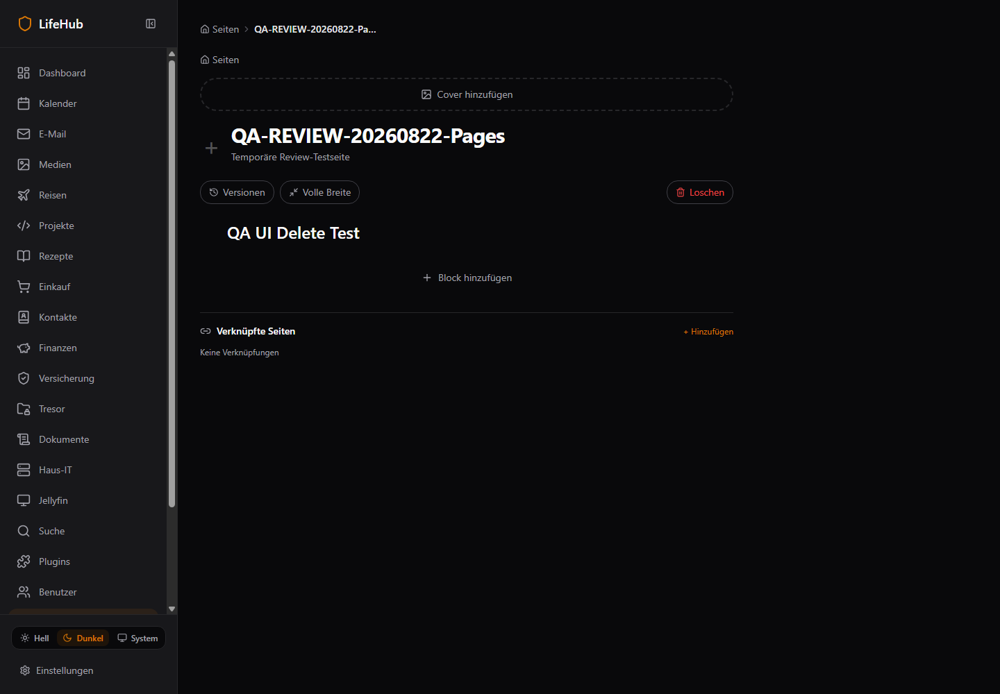
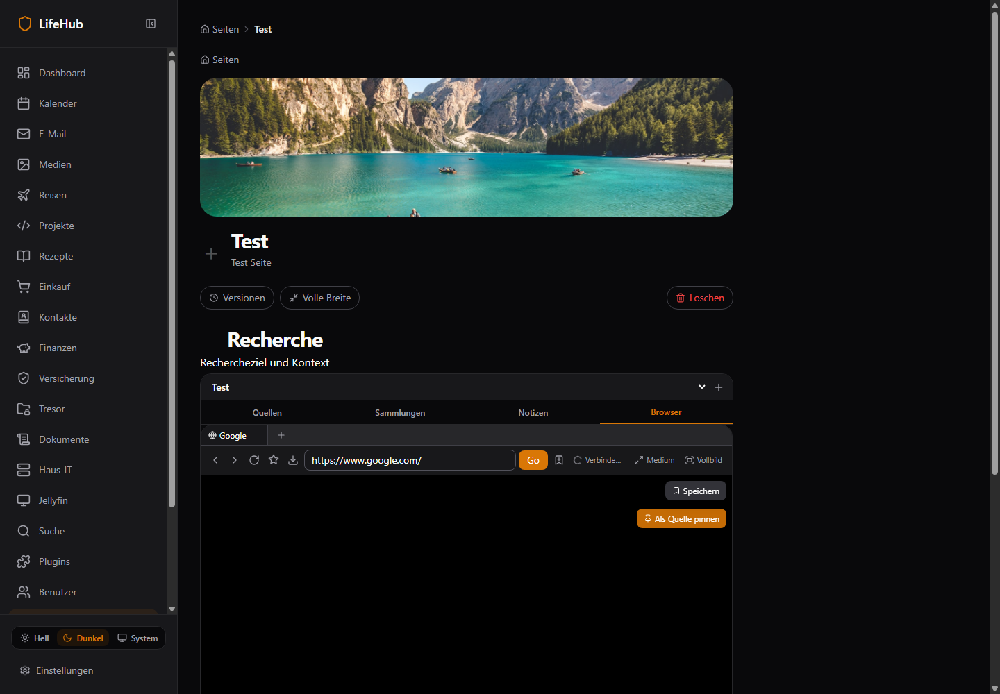

60 Findings
15 P0
38 P1
7 P2
56 Routen
182 Screenshots
1983 Controls
224 Evidence
Scorecard Docker/Deployability 2.4/10
Dokumentationskonsistenz 5.2/10
Urteil: Compilerstabil, aber Live-/Security-/Deployment-Reife kritisch. Die P0-Welle muss vor Feature-Polish abgeschlossen werden.
Live Coverage Status Anzahl PASS_RENDER 17 PARTIAL_NETWORK_ERRORS 20 FAIL_REDIRECT_DASHBOARD 8 PARTIAL_INVALID_ID_NO_CLEAR_STATE 6 PASS_INVALID_ID_STATE 5
Redirects: /documents, /insurance, /it-inventory, /projects, /recipes/dishes/[id], /search, /travel, /vault
Pages/Notion Delete funktioniert technisch, ist jedoch versteckt. Toggle Headings, TOC, Multi-Select/Nesting und echte Datenbanken fehlen. Zusätzlich besteht eine blockId/pageId-Owner-Lücke.

Browser Cold Start hängt; Remount liefert einen schwarzen Viewport mit ended Tracks. SSRF-Redirect/Subresource, --no-sandbox und unbegrenzte Chromiums sind P0.

Security Gültige Default-Admin-Credentials in der Login-UI, kein aktiver ThrottlerGuard, Klartext-Vault, Pages-IDOR, langlebige Querytokens und 22 hohe Dependency-Advisories.
Build & Tests Builds/Typechecks grün; Frontend 87 Tests. Backend App-Suite hat 0 Tests; rekursiver Testlauf scheitert an Package-Resolution. Coverage 0/fehlgeschlagen.
Docker Clean tag checkout
├─ frontend Dockerfile braucht unversioniertes .next
└─ backend Dockerfile braucht unversionierte dist
=> CI überträgt keine Artifacts, Release nicht hermetisch Priorität Credentials/Throttle/Vault/IDOR/Browser-Sandbox+Egress, Domain-500s, Travel-Vertrag und hermetische Dockerbuilds zuerst.
Alle Findings Alle Prioritäten P0 P1 P2
BROW-001 · Browser Cold Start bleibt nach erstem Fehler im Endlos-Spinner P0 Browser Reliability BOTH
Auswirkung Kernfunktion wirkt vollständig tot trotz gesundem Renderer Evidenz Live „Browser nicht erreichbar“; API später 201; Remount nötig; BrowserBlock:145-154Ursache startStream onError setzt nur status; Effect hängt nur an sessionId Empfehlung Bounded Retry/Backoff + manueller Retry + Startzustandsmaschine Akzeptanz Container-Coldstart heilt ohne Tabwechsel in Zielzeit Aufwand M BROW-002 · Live Browser zeigt schwarzen Viewport und Reconnect-Schleife P0 Browser WebRTC BOTH
Auswirkung Browser ist nicht benutzbar Evidenz browser-after-remount screenshot; 4 ended video tracks, status reconnectingUrsache Reconnect reused MediaStream und räumt ended tracks nicht; Handshake instabil Empfehlung Tracks/srcObject pro Reconnect sauber ersetzen; E2E-Diagnostik Akzeptanz 10-min Stream stabil, currentTime steigt, keine ended-track-Akkumulation Aufwand L BROW-004 · Redirect-, DNS-Rebinding- und Subresource-SSRF bleiben offen P0 Browser SSRF CODE_CONFIRMED
Auswirkung Bösartige Seite kann Docker-/LAN-Ziele ansteuern Evidenz server.js:92-108 prüft nur initial URL; page.goto folgt danach freiUrsache Keine Request-Interception oder egress policy Empfehlung Renderer-Egress-Proxy/Firewall + jede Request-IP prüfen Akzeptanz Redirect/Subresource/DNS-rebind private Ziele geblockt Aufwand L BROW-005 · Chromium läuft weiterhin mit --no-sandbox P0 Browser Sandbox CODE_CONFIRMED
Auswirkung Browser-Exploit erhält direkten Containerprozess; hohes Escape-Risiko Evidenz server.js:285-303Ursache Sandbox explizit deaktiviert Empfehlung Chromium-Sandbox unter non-root korrekt aktivieren Akzeptanz Start ohne --no-sandbox; Security smoke test; cap_drop all Aufwand M BROW-006 · Unbegrenzte Sessions starten je einen Chromium P0 Browser Capacity CODE_CONFIRMED
Auswirkung Ein Nutzer kann NAS-RAM/CPU erschöpfen Evidenz server.js BrowserSessionManager 730-765; keine LimitsUrsache Keine globale/per-user Quota, Queue oder Containerlimit Empfehlung Sessionpool, Quotas, Queue, TTL und Memory/CPU-Limits Akzeptanz 1/2/5/über-Limit Lasttest; kontrollierte 429 Aufwand L DOCKER-001 · Tag-Dockerjob kann Frontend/Backend aus Clean Checkout nicht bauen P0 CI/CD CODE_CONFIRMED
Auswirkung Release-Pipeline ist nicht reproduzierbar bzw. scheitert Evidenz CI Dockerjob fresh checkout; tracked .next/dist jeweils 0; Dockerfiles COPY sieUrsache Build-Artefakte aus vorherigem Job werden weder gebaut noch übertragen Empfehlung Dockerfiles bauen selbst oder CI lädt signierte Artifacts Akzeptanz Tag aus Clean Checkout baut/pusht alle Images und Smoke-Test startet sie Aufwand L DOCKER-002 · Backend-Dockerfile überspringt alle Builds und übernimmt Host-dist P0 Docker CODE_CONFIRMED
Auswirkung Stale oder fehlende Binärdateien gelangen ins Image Evidenz backend Dockerfile:60-69; .dockerignore lässt dist absichtlich zuUrsache Builder-Stage ist nur Attrappe wegen früherem WSL-Problem Empfehlung Hermetischer Linux-Build mit Ressourcenfix; keine Host-dist-Abhängigkeit Akzeptanz docker build aus git archive erfolgreich; SHA im Binary/Image Aufwand L DOCKER-003 · Frontend-Image verlangt vorgebautes .next; API-Base ist eingefroren P0 Docker CODE_CONFIRMED
Auswirkung Runtime-Env in Compose ändert Client/Rewrites nicht; stale UI-Deploys Evidenz frontend Dockerfile:5-10; routes-manifest destination backend:3007Ursache Prebuilt-Dockerfile und NEXT_PUBLIC Build-time-Konfiguration Empfehlung Multi-stage Next build mit explizitem ARG oder same-origin BFF Akzeptanz Image aus Clean Checkout; API-Ziel per dokumentiertem Build/Runtime-Vertrag Aufwand L DOCKER-004 · Backend startet trotz fehlgeschlagener Migration P0 Migrations CODE_CONFIRMED
Auswirkung Teilweise Schema-Stände gehen als scheinbar healthy online Evidenz start.sh:29-32 „non-fatal“; Finance/Shopping live 500Ursache Migrationfehler wird verschluckt Empfehlung Fail-fast Migration, readiness erst nach Schema-Version Akzeptanz Kaputte Migration verhindert Start; Upgrade/Rollback getestet Aufwand M FUNC-002 · Travel-Frontend und Backend haben unvereinbare API-Pfade P0 Travel BOTH
Auswirkung Reisen-Domain ist praktisch unbenutzbar Evidenz Frontend /travel/trips; TravelController @Controller(trips); live 404 vs /trips 500Ursache API-Vertrag driftete ohne Contract-Test Empfehlung Ein kanonischer Prefix und Contract-Test; 500-Ursache beheben Akzeptanz GET/CRUD Travel liefert 2xx und Seite rendert Daten/Empty korrekt Aufwand M FUNC-003 · Alle sechs Finance-Kernendpunkte liefern live HTTP 500 P0 Finance OBSERVED
Auswirkung Gesamte Finanzdomain zeigt falsche Empty States Evidenz net-worth, budgets, assets, accounts, transactions, savings-goals je 500Ursache Wahrscheinlich Deployment-/Schema-Drift; Startscript toleriert Migrationfehler Empfehlung Logs+Migration prüfen, Schema reparieren, Error UI Akzeptanz Alle Endpunkte 2xx; Migration aus leerer und bestehender DB getestet Aufwand L PAGE-013 · Block-Operationen validieren Blockzugehörigkeit zur Seite nicht P0 Pages Security CODE_CONFIRMED
Auswirkung IDOR: eigener pageId plus fremde blockId kann Update/Delete/Reorder/Versionzugriff auslösen Evidenz pages.service.ts:186-225,228-258Ursache Nur Page-Owner wird geprüft; Block wird global per ID geladen/geändert Empfehlung Repositorymethoden nach blockId+pageId+ownerId scopen Akzeptanz Cross-owner/page Tests ergeben 404; legitime Operationen grün Aufwand M SEC-001 · Gültige Default-Admin-Zugangsdaten sind vorbefüllt und öffentlich angezeigt P0 Authentication BOTH
Auswirkung Jeder Netzwerkzugreifer erhält sofort Adminzugang Evidenz login/page.tsx:16-17,139-140; Live-Login erfolgreichUrsache Testdefaults wurden in Produktions-UI und Seed-Zustand belassen Empfehlung Keine Defaults; First-run Setup mit erzwungenem Secretwechsel Akzeptanz Frische Instanz verlangt einmaliges Admin-Setup; UI enthält keine Credentials Aufwand M SEC-002 · @Throttle ist wirkungslos, weil ThrottlerGuard nicht registriert ist P0 Authentication CODE_CONFIRMED
Auswirkung Unbegrenztes Brute Force gegen bekannten Adminaccount Evidenz AppModule importiert ThrottlerModule, aber kein APP_GUARD/ThrottlerGuardUrsache Modul konfiguriert ohne Guard; Login-Dekorator suggeriert Schutz Empfehlung Globalen ThrottlerGuard registrieren; account+IP Limits Akzeptanz 6. Fehlversuch im Fenster =>429; verteilte/accountbasierte Tests Aufwand S SEC-003 · Vault-Passwörter und TOTP-Secrets werden im Klartext transportiert/gespeichert/ausgegeben P0 Vault CODE_CONFIRMED
Auswirkung DB/API/XSS-Kompromiss legt alle Geheimnisse offen Evidenz vault form:379-414; service:19-27; repo:41-46; detail:258-273,318-334Ursache Feld heißt encryptedPassword, aber es gibt keinerlei Encryption; Input type=text Empfehlung Serverseitige Envelope Encryption/KMS; DTO plaintext nur transient; Secrets nie listen Akzeptanz DB enthält nur AEAD-Ciphertext; key rotation; API redaction; Migration Aufwand XL BROW-003 · Stream-Ticket gilt 24h und WebSocket prüft keinen Origin P1 Browser Auth CODE_CONFIRMED
Auswirkung Leakbares Queryticket kann lange von fremdem Origin wiederverwendet werden Evidenz browser-renderer.service.ts:79; server.js:845-855Ursache Lange HMAC-TTL, keine Origin-/Single-use-Bindung Empfehlung 5-Min Single-use Ticket, Origin-Allowlist, Rotation Akzeptanz Replay/foreign-origin Tests werden abgelehnt Aufwand M BROW-007 · Legacy-Proxy-Vertrag und POST sind weiterhin kaputt P1 Browser Legacy CODE_CONFIRMED
Auswirkung Gespeicherte Legacy-Blöcke rendern JSON/GET statt Seite/Form Evidenz Renderer /content => {html}; Controller behandelt response.text als HTML; method/postData ignoriertUrsache Widersprüchliche alte Proxyarchitektur Empfehlung Legacy entfernen/migrieren oder Vertrag vollständig testen Akzeptanz Migration abgeschlossen; kein /proxy oder E2E GET+POST grün Aufwand M BROW-008 · Legacy-Renderer teilt Session „legacy“ zwischen Nutzern P1 Browser Isolation CODE_CONFIRMED
Auswirkung Cookies/History können Cross-user leaken Evidenz server.js:783-787,833Ursache Konstanter Profil-/Sessionname Empfehlung Legacy entfernen oder pro Owner/Request isolieren Akzeptanz Zwei Nutzer teilen keinerlei Storage/Cookies Aufwand M BROW-009 · Renderer-Port 3111 ist in Dev und Prod extern exponiert P1 Browser Deployment BOTH
Auswirkung Traefik/Auth/Rate-Limit werden umgangen; Angriffsfläche steigt Evidenz Compose ports; live /health 200Ursache Browser WS wird direkt statt über kontrollierten Reverse Proxy genutzt Empfehlung Interne-only Service-Netze; WS via Origin-geschützten Proxy Akzeptanz Hostport geschlossen; Browser funktioniert via HTTPS/WSS Aufwand M BROW-010 · Tab-Synchronisierung verschluckt alle API-Fehler P1 Browser Persistence CODE_CONFIRMED
Auswirkung Tabs können nach Reload fehlen/duplizieren ohne Hinweis Evidenz BrowserBlock.tsx:205-235 .catch(()=>undefined)Ursache Renderer und DB sind konkurrierende Sources of Truth Empfehlung Server-authoritative Mapping und sichtbarer Sync-State Akzeptanz Fehler wird angezeigt/retrybar; keine Duplikate Aufwand L BROW-011 · Screenshot→Sharp→JS-I420 ist CPU-intensiver Video-Pfad P1 Browser Performance CODE_CONFIRMED
Auswirkung Mehrere Sessions skalieren schlecht auf NAS Evidenz server.js:180-203, captureFrame, 15 FPSUrsache Jeder Frame wird voll dekodiert und per JS Pixel für Pixel konvertiert Empfehlung CDP screencast/native encoder evaluieren; FPS/Quality adaptiv messen Akzeptanz CPU je aktiver Session unter definiertem Ziel Aufwand XL BROW-012 · Browser besitzt keine UI/WebRTC/Cold-start-E2E-Suite P1 Browser Testing BOTH
Auswirkung Kritische Selbstheilungsinvarianten regressieren unbemerkt Evidenz Nur 2 Auth-Tests + URL policy; Live RegressionUrsache Tests decken nur Token/URL-Policy Empfehlung Containerisierte E2E-Matrix für Stream/Input/Reconnect/Isolation Akzeptanz CI reproduziert Coldstart, Black frame, tab CRUD, SSRF Aufwand L DOCKER-005 · Frontend und Backend laufen als root P1 Container Security CODE_CONFIRMED
Auswirkung Container-Kompromiss hat unnötig hohe Rechte Evidenz Dockerfiles ohne USER; Browser ist positiv non-rootUrsache Runner-User nicht definiert Empfehlung UID ohne Shell, chown, read-only FS wo möglich Akzeptanz docker inspect zeigt non-root; Schreibpfade explizit Aufwand M DOCKER-006 · Prod exponiert Backend und Chrome trotz Traefik direkt P1 Network CODE_CONFIRMED
Auswirkung TLS, Rate-Limit und Security-Headers können umgangen werden Evidenz docker-compose.prod.yml ports 3007 und 3111Ursache Interne Services veröffentlichen Hostports Empfehlung Nur Traefik extern; interne Netzsegmente Akzeptanz Portscan Host zeigt nur 80/443 und explizite optionale Dienste Aufwand M DOCKER-007 · Keine CPU/RAM/PID-Limits für Browser und Kernservices P1 Reliability CODE_CONFIRMED
Auswirkung Browser-/Query-Spikes können gesamten NAS destabilisieren Evidenz Compose ohne deploy/resources/mem_limit/pids_limitUrsache Ressourcenverträge fehlen Empfehlung Service-Limits, reservations, ulimits und OOM-Policy Akzeptanz 5-Session-Test bleibt innerhalb Budget; Kern-DB verfügbar Aufwand M FUNC-001 · Acht Deep Links verlieren ihr Ziel durch Auth-Hydration-Race P1 Routing/Auth BOTH
Auswirkung Direkte URLs führen über Login zum Dashboard; Route wirkt defekt Evidenz routes.csv FAIL_REDIRECT_DASHBOARD; documents:70, insurance:88, IT:240, projects:645, search:69, travel:514, vault:60Ursache Effect prüft initial null accessToken vor Zustand-Rehydration Empfehlung Zentraler AuthBoundary mit hydration state und returnUrl Akzeptanz Direktaufruf jeder geschützten Route bleibt nach Rehydration erhalten Aufwand M FUNC-004 · Shopping-Liste liefert live HTTP 500 P1 Shopping OBSERVED
Auswirkung Einkaufslisten sind nicht verlässlich nutzbar Evidenz /api/v1/shopping-lists 500; Shopping-Screenshot zeigt 0 ListenUrsache Backend/DB-Fehler wird als Empty State verschluckt Empfehlung Endpoint/Schema reparieren und UI-Fehlerstatus Akzeptanz GET 200; Create/Update/Delete E2E grün Aufwand M FUNC-005 · E-Mail-Status liefert live HTTP 500 P1 Email OBSERVED
Auswirkung UI zeigt „Keine E-Mails“ statt Integrationsfehler Evidenz /api/v1/email/status 500; Email-ScreenshotUrsache Fehlerpfad wird nicht getrennt von leerem Postfach Empfehlung Status-Service reparieren; Connection/Error CTA Akzeptanz Connected/disconnected/error/empty eindeutig getestet Aufwand M FUNC-007 · Travel besitzt acht bestätigte Frontend/Controller-Mismatches P1 API Contracts CODE_CONFIRMED
Auswirkung Jeder Travel CRUD-Aufruf trifft falsche Route Evidenz api-contracts.csv CONFIRMED_MISMATCH=8Ursache Manuelle Stringpfade ohne OpenAPI-Client Empfehlung OpenAPI/typed Client generieren und CI-Contract-Gate Akzeptanz 0 CONFIRMED_MISMATCH; E2E pro Mutation Aufwand M FUNC-009 · Backend-Testscript besteht trotz null Testdateien P1 Testing BOTH
Auswirkung CI vermittelt falsche Sicherheit; Security-/CRUD-Regressions unentdeckt Evidenz backend test PASS: No test files found; --passWithNoTests; coverage FAILUrsache Backend-App filtert Domain-Tests aus und toleriert Leerlauf Empfehlung No-tests als Fehler; Domain-Suites zentral aggregieren Akzeptanz Backend test führt reale Tests aus; Coverage-Schwelle enforced Aufwand M MAINT-001 · Media 1.704 LOC und Pages 1.622 LOC sind Änderungshotspots P1 Maintainability CODE_CONFIRMED
Auswirkung Hohe Kopplung, schwierige Tests und Merge-Konflikte Evidenz code-metrics.jsonUrsache Route, State, Dialoge, Datenzugriff und Renderer leben in Monolithdateien Empfehlung Feature-Slices/Hooks/Presenter schrittweise extrahieren Akzeptanz Kein Route-Component >500 LOC; Verhaltenstests grün Aufwand L MAINT-004 · Rekursiver Workspace-Test scheitert an @lifehub/auth-Auflösung P1 Testing BOTH
Auswirkung API-Controller-Suites laufen in CI nicht; pnpm stoppt beim ersten Domainfehler Evidenz workspace-test.log: Contacts API suite FAIL, Dashboard API suite 0 tests; workspace typecheck PASSUrsache Workspace-Package main/exports zeigt auf nicht vorhandene dist-Artefakte oder Vitest-Alias fehlt Empfehlung Test-Aliases/source exports zentral konfigurieren; Packages vor Tests reproduzierbar bauen Akzeptanz pnpm -r run test läuft aus Clean Checkout vollständig grün und führt alle Controller-Suites aus Aufwand M PAGE-001 · Blocklöschen funktioniert technisch, ist aber versteckt/unzugänglich P1 Pages UX BOTH
Auswirkung Nutzer erlebt Löschen als nicht vorhanden Evidenz BlockHandle wrapper opacity 0; live UI Delete 204 + Read-back absentUrsache Delete liegt hinter unsichtbarem Hover-Plus-Menü Empfehlung Persistenter Handle bei Fokus/Touch, Delete-Shortcut, Undo Akzeptanz QA: Maus/Touch/Tastatur löschen + Undo; API Read-back Aufwand M PAGE-002 · BlockHandle-Suchfeld filtert nichts P1 Pages UX CODE_CONFIRMED
Auswirkung Täuschendes Control und langsame Blockwahl Evidenz BlockHandle.tsx:87-95 ohne value/onChange; Optionen ungefiltertUrsache Nur visuelles Input-Skelett implementiert Empfehlung Query-State, Filter und Keyboard-Navigation Akzeptanz Eingabe reduziert Liste und Enter wählt Treffer Aufwand S PAGE-003 · Vier widersprüchliche Blocklisten driften P1 Pages Architecture CODE_CONFIRMED
Auswirkung Unsupported Widgets werden angeboten oder fehlen; Änderungen vervielfacht Evidenz page.tsx union/defaults/rendering; BlockHandle 15; registry 28; DTO/entityUrsache Keine einzige ausführbare Registry als Source of Truth Empfehlung Registry besitzt Schema, Renderer, Default, Commands, Supportstatus Akzeptanz Jeder Typ einmal registriert; CI prüft Frontend/Backend-Parität Aufwand L PAGE-004 · Slash-Menü konvertiert aktuellen Block statt neuen einzufügen P1 Pages Editor CODE_CONFIRMED
Auswirkung Bestehender Text kann unerwartet umgewandelt/verloren werden Evidenz page.tsx:255-257,560-565; SlashMenu.tsx:112-117Ursache onSelect ist an onBlockTypeChange gekoppelt Empfehlung Insert-at-caret API und stabile Cursorposition Akzeptanz Slash erzeugt neuen Block unter Cursor ohne Inhaltsverlust Aufwand M PAGE-005 · Rich-Text-Formatierung ist nicht auffindbar P1 Pages Editor BOTH
Auswirkung Bold/Italic/Strike/Link nur über unbekannte Shortcuts oder gar nicht Evidenz StarterKit vorhanden; live formatControls=[]Ursache Keine Bubble-/Floating-Toolbar und keine Shortcut-Hilfe Empfehlung Accessible BubbleMenu mit Marks/Link/Code/Highlight Akzeptanz Selection zeigt Toolbar; Keyboard+Screenreader getestet Aufwand M PAGE-006 · Toggle ist nur Label plus Plain-Textarea P1 Pages Editor CODE_CONFIRMED
Auswirkung Keine echten Child-Blocks, Rich Text oder DnD Evidenz ToggleBlock.tsx:13-37Ursache Content-Schema speichert String statt Blockhierarchie Empfehlung Nested block model für Toggle-Children Akzeptanz Kinder beliebiger Typen anlegen/reordern/persistieren Aufwand L PAGE-007 · Einklappbare H1/H2/H3 fehlen vollständig P1 Pages Editor CODE_CONFIRMED
Auswirkung Explizite Nutzeranforderung und Notion-Kernmuster fehlen Evidenz Keine toggle_heading-Komponente/Registry/DTOUrsache Toggle und Heading sind getrennte flache Typen Empfehlung Toggle-Heading-Varianten mit Child-Blocks Akzeptanz H1/H2/H3 einklappbar, TOC/Keyboard kompatibel Aufwand M PAGE-008 · Inhaltsverzeichnis aus Überschriften fehlt P1 Pages Editor CODE_CONFIRMED
Auswirkung Lange Seiten sind schlecht navigierbar Evidenz 0 TableOfContents/TOC-ImplementierungenUrsache Keine stabilen Heading-Anker oder abgeleitete Outline Empfehlung Derived TOC-Block/Sidebar aus Heading-Index Akzeptanz Live aktualisiert, anklickbar, Deep-Link-fähig Aufwand M PAGE-009 · Multi-Select, Nested Blocks und page-weites Undo fehlen P1 Pages Architecture CODE_CONFIRMED
Auswirkung Keine Bulk-Aktionen, Einrückung oder sichere Strukturänderungen Evidenz Keine selectedBlocks/BlockRange; flache sortOrder-ListeUrsache Editor-State modelliert nur einzelne Blöcke Empfehlung Selection/parentBlockId/command history spezifizieren Akzeptanz Shift/Ctrl-Auswahl, Bulk move/delete/copy, Undo/Redo E2E Aufwand XL PAGE-010 · Everything-is-a-database existiert nur als ungenutzte Tabelle P1 Pages Databases CODE_CONFIRMED
Auswirkung Notion-Datenbankkonzept faktisch nicht vorhanden Evidenz database_pages public.ts:973-981; keine weitere NutzungUrsache Schema-Stub ohne Repository/Service/API/UI Empfehlung Vollständigen Vertical Slice planen oder Stub entfernen Akzeptanz DB-Seite, Row-as-Page und Property CRUD E2E Aufwand XL PAGE-011 · Views, Properties, Filter, Relations, Formeln und Rollups fehlen P1 Pages Databases CODE_CONFIRMED
Auswirkung Wesentlicher Notion-Funktionsumfang fehlt Evidenz Keine Pages-Implementierung; pages_databases_concept.md nur SpecUrsache Kein Datenbank-View-/Property-Engine Empfehlung Phasen: typed properties → table/list → filter/sort → board/calendar → formulas Akzeptanz Jede Phase mit API-Schema, Migration und UI-E2E Aufwand XL PAGE-012 · Debounced Textupdate kann beim Unmount verloren gehen P1 Pages Reliability CODE_CONFIRMED
Auswirkung Schnelles Navigieren kann letzte 800ms Text verlieren Evidenz page.tsx:225-253 cleanup clearTimeout ohne flushUrsache Pending Update wird beim Cleanup verworfen Empfehlung Flush on blur/unmount + Save-State/Retry Akzeptanz Navigation <800ms erhält letzten Text nach Reload Aufwand S PAGE-014 · Reorder ist nicht atomar und akzeptiert beliebige Block-IDs P1 Pages Data Integrity CODE_CONFIRMED
Auswirkung Teilweise Sortierung/Race und fremde Blocks möglich Evidenz pages.service.ts:220-225 Schleife ohne TransactionUrsache Einzelupdates ohne Transaktion/Membership-Check Empfehlung Transaction + unique positions + page-scoped IDs Akzeptanz Concurrent reorder bleibt konsistent; Rollback bei Fehler Aufwand M PERF-001 · Build enthält 3.77 MB JS; größter Chunk 513 KB P1 Frontend Performance CODE_CONFIRMED
Auswirkung Schlechter Cold Load auf Mobile/NAS, unnötige Parsekosten Evidenz next-build-metrics.json: 110 JS chunksUrsache Große Libraries/Client Components werden breit gebündelt Empfehlung Bundle-Analyzer, dynamische Imports und RSC-Grenzen Akzeptanz Routebudgets: shared <150KB gzip, kein Chunk >250KB raw Aufwand L PERF-002 · Recipes lädt bis 1.16 MB encoded, Pages 866 KB P1 Frontend Performance OBSERVED
Auswirkung Kernrouten überschreiten sinnvolle Payloadbudgets Evidenz live-performance-summary.jsonUrsache Viele Bilder/Clientcode, fehlende Optimierung und große Editorabhängigkeiten Empfehlung Bild-/Route-Lazyload, Split Editor/Browser, Cache-Strategie Akzeptanz LCP<2.5s; definierte KB-Budgets pro Route Aufwand L PERF-003 · Lint meldet 38 unoptimierte img-Verwendungen P1 Images BOTH
Auswirkung Bandbreite/LCP und Layoutqualität leiden Evidenz quality-summary.json; 404/blank recipe imagesUrsache Direkte img-URLs ohne Optimizer/Fallback/Dimensionvertrag Empfehlung Image-Wrapper mit Thumbnail, sizes, lazy/eager policy und Fallback Akzeptanz 0 relevante no-img warnings; LCP/bytes gemessen Aufwand L PERF-005 · Pages-Reorder führt N Einzelupdates sequenziell aus P1 Database CODE_CONFIRMED
Auswirkung Latenz und Inkonsistenz steigen linear mit Blockzahl Evidenz pages.service.ts:220-225Ursache Kein Batch/Transaction Empfehlung Ein statement/transaction mit Membership-Check Akzeptanz 100 Blöcke atomar innerhalb Zielzeit Aufwand M SEC-004 · 24h Access-/LocalStorage-Tokens werden zusätzlich in Bild-URLs gelegt P1 Token Security CODE_CONFIRMED
Auswirkung XSS, Logs, Browser-History und Referrer können Vollzugriffstoken leaken Evidenz jwt.ts:16; auth-store.ts; music-api.ts:127/382Ursache Bearer-Token dient zugleich als langlebiges Medien-Querytoken Empfehlung Kurze Access-TTL, HttpOnly/BFF oder separate signierte Medientickets Akzeptanz Keine JWTs in URLs; CSP/XSS-Test; Tokenrotation Aufwand L SEC-005 · Live/Dev-Compose erlaubt CORS * mit credentials P1 CORS CODE_CONFIRMED
Auswirkung Beliebige Origins dürfen Browser-API-Antworten anfragen Evidenz main.ts:18-25; docker-compose.yml CORS_ORIGINS=*Ursache Entwicklungsdefault wurde in Laufzeitkonfiguration übernommen Empfehlung Exakte Origin-Allowlist pro Umgebung Akzeptanz Fremder Origin scheitert Preflight; LifeHub-Origin grün Aufwand S SEC-006 · Dev-Compose enthält feste DB/Redis/Meili-Secrets P1 Secrets CODE_CONFIRMED
Auswirkung Repo-/Image-Leak kompromittiert alle Standardinstanzen Evidenz docker-compose.yml environment/commandsUrsache Convenience-Credentials sind nicht extern konfiguriert Empfehlung Alle Secrets über .env/secret files, Rotation und Beispielwerte Akzeptanz Secret-Scan grün; frische Instanz generiert individuelle Werte Aufwand M SEC-007 · Produktions-Audit meldet 49 Vulnerabilities, 22 hoch P1 Dependencies BOTH
Auswirkung Bekannte Schwachstellen in Next/Nest/body-parser/ws u.a. Evidenz quality-summary.json; pnpm audit exit 1Ursache Abhängigkeiten wurden nicht regelmäßig aktualisiert/gated Empfehlung Patchplan, Overrides nur befristet, Audit-Gate Akzeptanz 0 high oder dokumentierte akzeptierte Ausnahme mit Datum Aufwand L DOCKER-008 · Production nutzt mutable latest-Tags ohne Digest/Rollbackvertrag P2 Release CODE_CONFIRMED
Auswirkung Nicht reproduzierbare Deploys und unsicheres Rollback Evidenz docker-compose.prod.yml ghcr ...:latestUrsache Versiontag wird nicht im Compose fixiert Empfehlung Immutable Version/Digest + dokumentiertes Rollback Akzeptanz Deployment manifestiert Build-ID/SHA und kann N-1 starten Aufwand S FUNC-006 · Ungültige Jellyfin-IDs führen häufig zu 500 statt 404 P2 Error Contracts OBSERVED
Auswirkung Schlechte Deep-Link-Resilienz und unnötige Alarmierung Evidenz Atlas: detail/children/playlist endpoints mit invalid ID 500Ursache Provider-/Service-Fehler werden unnormalisiert als 500 geworfen Empfehlung Not-found auf 404 mappen, Providerfehler RFC7807 Akzeptanz Invalid IDs ergeben verständlichen 404-State Aufwand M FUNC-008 · Alte Media-MusicLibrary ruft drei nicht existente Endpunkte P2 Dead Code CODE_CONFIRMED
Auswirkung Wartungs- und Verwechslungsrisiko Evidenz MusicLibrary.tsx unimported; /media/music/* ohne ControllerUrsache Abgelöste Komponente blieb im Quellbaum Empfehlung Löschen oder an aktuelle Jellyfin-Musik-API anbinden Akzeptanz Kein unerreichbarer API-Clientcode Aufwand S MAINT-002 · 73.317 LOC haben nur 22 Testdateien P2 Maintainability CODE_CONFIRMED
Auswirkung Viele Domains sind nur manuell abgesichert Evidenz code-metrics.json; Backend 0 App-TestsUrsache Testpyramide/CI aggregiert Domain-Tests nicht konsequent Empfehlung Contract-/Service-/Component-/E2E-Mindestmatrix Akzeptanz Coverage je kritischer Domain mit Schwellen Aufwand XL MAINT-003 · Lint besteht trotz 76 Warnungen P2 Quality BOTH
Auswirkung Bekannte React-/A11y-/Performanceprobleme werden normalisiert Evidenz quality-summary.json: 38 img, 23 hooks, Alt-WarnungenUrsache CI nutzt Error-only Gate, keine Warning-Baseline Empfehlung Warnbudget und baseline-aware no-new-warnings Akzeptanz Neue Warnungen 0; Bestand priorisiert abgebaut Aufwand M PERF-004 · Jellyfin-Seiten rendern bis 862 Interactives P2 DOM/A11y OBSERVED
Auswirkung Keyboard-/Screenreaderlast und DOM-Kosten steigen Evidenz live-atlas-summary.jsonUrsache Große Listen ohne konsequente Virtualisierung/Progressive Mount Empfehlung Virtualize/limit mounted rows and controls Akzeptanz DOM/interactive Budget pro View; Tastaturnavigation stabil Aufwand L PERF-006 · Userliste lädt Rollen in N+1-Schleife P2 Database CODE_CONFIRMED
Auswirkung Adminliste erzeugt pro User zusätzliche Query Evidenz users.repository.ts:121-146Ursache findRolesByUserId pro Row Empfehlung Join/aggregate oder Batch-IN Akzeptanz Querycount bleibt konstant bei 1/100 Usern Aufwand S